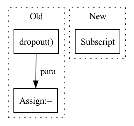

Pattern ID :2475
Before Change
self.emb = self.embedding(x)
if self.drop < 1:
self.emb = self.dropout( self.emb)
count = np.arange(x.shape[0]) + 1
self.c_t = torch.zeros_like(self.emb) // shape=(seq_len, batch_size, day_dim)
for i, att_timesteps in enumerate(count):After Change
out = torch.zeros((batch_size, time_steps, self.hidden_dim))
for cur_time in range(time_steps):
cur_x = x[:, : cur_time + 1, :]
out[:, cur_time, :] = self.retain_encoder(cur_x)
return out
In pattern: SUPERPATTERN
Frequency: 4
Non-data size: 3
Instances Fragment ID: 14717088
Project Name: yhzhu99/covid-ehr-benchmarks
Commit Name: b3d4ba85ad8e8cfeb3e45e07e5fadfa3fd4a25fa
Time: 2022-06-25
Author: yhzhu99@gmail.com
File Name: app/models/backbones/retain.py
M Class Name: RETAIN
N Class Name: RETAIN
M Method Name: forward(2)
N Method Name: forward(2)
M Parent Class: nn.Module
N Parent Class: nn.Module
M File Name: app/models/backbones/retain.py
N File Name: app/models/backbones/retain.py
M Start Line: 64
M End Line: 83
N Start Line: 44
N End Line: 53
Before Change
x = self.activation(x)
// average pooling layer
x = self.avgpool(x)
x = self.dropout( x)
// flatten for input to fully-connected layer
e = x.view(x.size(0), -1)
else:
x = self.conv1(x)After Change
// assert x.shape[1:] == torch.Size([1280,8,8])
// global pooling and fc (in place of conv 1x1 in paper)
x = F.adaptive_avg_pool2d(x, 1)
e = x.view(x.shape[0] , -1)
x = self.fc(e)
if last: Fragment ID: 14717107
Project Name: decile-team/cords
Commit Name: 8e7f9f1d840988cde6e0b5035ab6f9ba404f5485
Time: 2021-03-25
Author: krishnatejakillamsetty@gmail.com
File Name: cords/utils/models/mobilenetv2tf.py
M Class Name: MobileNet2
N Class Name: MobileNet2
M Method Name: forward(4)
N Method Name: forward(4)
M Parent Class: nn.Module
N Parent Class: nn.Module
M File Name: cords/utils/models/mobilenetv2tf.py
N File Name: cords/utils/models/mobilenetv2tf.py
M Start Line: 163
M End Line: 188
N Start Line: 99
N End Line: 124
Before Change
// return {"h": accum}
if self.dropout:
h = self.dropout( h)
self.g.ndata["h"] = torch.mm(h, self.weight)
self.g.update_all(gcn_msg, gcn_reduce, self.node_update)
h = self.g.ndata.pop("h")
return hAfter Change
accum = torch.sum(node.mailbox["m"], 1)
return {"h": accum}
graph.ndata["h"] = torch.mm(h, self.weight)
graph.update_all(gcn_msg, gcn_reduce)
h = graph.ndata.pop("h")
return h Fragment ID: 14717116
Project Name: yukewang96/tcgnn-pytorch
Commit Name: d00ae2c7938d59aa62cf50d384decc4134983867
Time: 2021-02-07
Author: 505008605@qq.com
File Name: dgl_baselines/gat.py
M Class Name: GATLayer
N Class Name: GATLayer
M Method Name: forward(3)
N Method Name: forward(2)
M Parent Class: nn.Module
N Parent Class: nn.Module
M File Name: dgl_baselines/gat.py
N File Name: dgl_baselines/gat.py
M Start Line: 87
M End Line: 91
N Start Line: 67
N End Line: 81
Before Change
embed_out = self.embedding(x)
lstm_out, self.hidden = self.lstm(embed_out, self.hidden)
lstm_out = self.dropout( lstm_out)
lstm_out = lstm_out.contiguous().view(-1, self.hidden_dim)
fc_out = self.fc(lstm_out)
return fc_outAfter Change
)
_, (hidden, cell) = self.lstm(packed_embed_out)
hidden = self.dropout(torch.cat((hidden[-2, :, :], hidden[-1, :, :] ), dim=1))
fc_out = self.fc(hidden)
return fc_out Fragment ID: 14717101
Project Name: sforaidl/kd_lib
Commit Name: d00c232de5a16bcd2a81b896a35ec3f20c2f9fa8
Time: 2020-08-23
Author: 31511755+avishreekh@users.noreply.github.com
File Name: KD_Lib/models/lstm.py
M Class Name: LSTMNet
N Class Name: LSTMNet
M Method Name: forward(3)
N Method Name: forward(2)
M Parent Class: nn.Module
N Parent Class: nn.Module
M File Name: KD_Lib/models/lstm.py
N File Name: KD_Lib/models/lstm.py
M Start Line: 58
M End Line: 63
N Start Line: 47
N End Line: 55